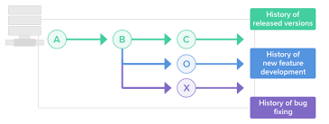

Pycharm & CI-CD

Pycharm
Generally, PyCharm runs and debugs tests in the same way as other applications, by running the run/debug configurations you have created. When doing so, it passes the specified test classes or methods to the test runner. In many cases, you can initiate a testing session from a context menu. For this purpose, the Run and Debug commands are provided in certain context menus. For example, these commands are available for a test class, directory, or a package in the Project tool window. They are also available for a test class or method you are currently working on in the editor.
Files and their Representation
Simple pages
- Templates
- about: general info regarding self
- index: general index page
- Pages1-4: general data pages
- Dunder page
Static
- Css:Basic Styling and format
- images:image files used in current web pages
- JS: JavaScript :runs basic javascript on pages
templates
- base html: basic file layout to work on
- dunder file
- Run file
Calculator
- Operations:basic operations for maths
test
- Test pages to check for errors
venv
- Flask file : creates flask
- Composer file : Ochestration file that contains the configuration to develop locally, it overrides the Dockerfile to run the flask development server instead of running the gunicorn server that is used for hosting on Heroku
- docker file: File used to create an image to run in container and runs the program
- Heroku.yml: Transfers the flask on heroku app so it runs via Heroku
- Pytest file : the .ini file is responsible for excuting pytests properly
- Read me and requirements
- Setup file
Accesing terminal using commands
- start the command prompt or power shell
- docker run -d --name container name
- docker ps
Git
Git (/ɡɪt/) is software for tracking changes in any set of files, usually used for coordinating work among programmers collaboratively developing source code during software development. Its goals include speed, data integrity, and support for distributed, non-linear workflows (thousands of parallel branches running on different systems)
Branches
A branch in Git is simply a lightweight movable pointer to one of these commits. The default branch name in Git is master . As you start making commits, you're given a master branch that points to the last commit you made. Every time you commit, the master branch pointer moves forward automatically
Merge
Merging is Git's way of putting a forked history back together again. The git merge command lets you take the independent lines of development created by git branch and integrate them into a single branch.
Commit
The git commit command captures a snapshot of the project's currently staged changes. Committed snapshots can be thought of as “safe” versions of a project—Git will never change them unless you explicitly ask it to.
Tags
Tags are ref's that point to specific points in Git history. Tagging is generally used to capture a point in history that is used for a marked version release (i.e. v1. 0.1). A tag is like a branch that doesn't change. Unlike branches, tags, after being created, have no further history of commits.
Repository
A Git repository is the . git/ folder inside a project. This repository tracks all changes made to files in your project, building a history over time. Meaning, if you delete the . git/ folder, then you delete your project's history.
.